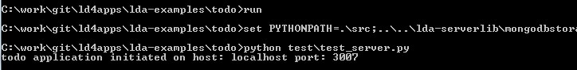
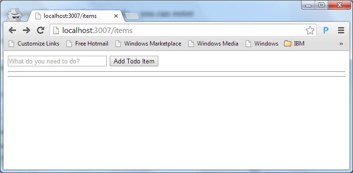
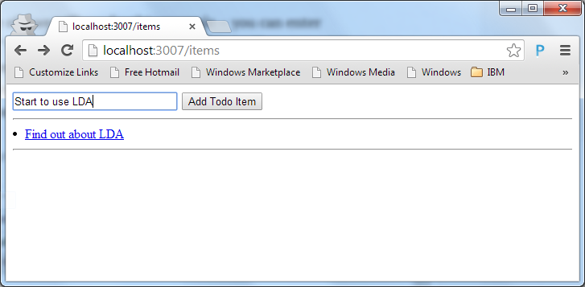
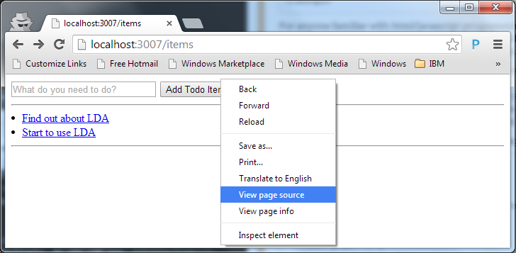
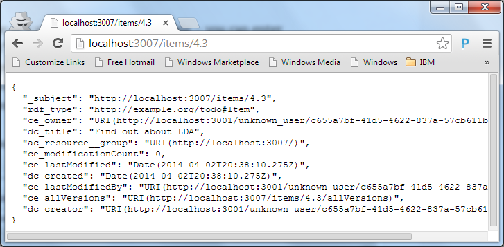
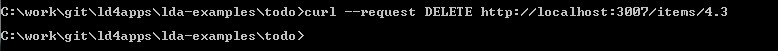
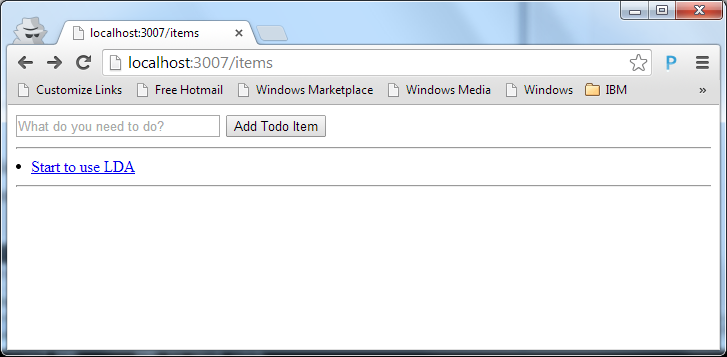

Developing LDA Applications
As with most new technologies, the easiest way to get started is to look at an example. To help you get an idea of how LDA applications are implemented, we’ll start with a very simple ‘Todo List’ application from the lda-examples repository. You should be able to understand the framework just by reading, but you might also like to install the software yourself and follow along in a more hands-on fashion. If so, refer to Downloading the Software before proceeding.
To get started, every LDA-based application requires at least two files:
- logic_tier.py
- application.js
logic_tier.py
This is a python file that implements the server application, which takes the form of a Python class. This class can get all the standard REST/RDF behavior by subclassing a class provided in the framework. The simplest file to get started looks like this:
1 2 3 | |
Because of the code it inherits, this trivial implementation already supports the full HTTP/REST protocol. You will eventually override these behaviors to implement business logic specific to your application – validations, augmentations, side-effects, and so on – but the default behavior is a very good starting point.
The inherited code comes from two library modules called logiclibrary and mongodbstorage. When these are more mature, we will no doubt supply them as Python ‘eggs’. For now they are available in the lda-serverlib repository which you need to download from github.
If you look at the ‘Todo List’ application, you’ll see that its logic_tier.py implementation class (located in lda-examples/todo/src/logic_tier.py), is exactly the simple implementation shown above. It adds no custom server implementation code of its own.
application.js
This is a Javascript file that implements your client application, which is usually a mobile or web user interface. This file, and any others it references, can be anywhere on the web – they do not have to be on your business logic server. application.js can do anything it wants, but the following example file will take advantage of the libraries that LDA provides to support REST and RDF, and still let your application do pretty much anything it wants.
1 2 3 4 5 6 7 8 9 10 11 | |
As you can see, what this code basically does is load the LDA utils.js client libarary (see lda-clientlib) first, and then loads application.html which is a file you will write. If you choose to use the LDA client libraries (which we recommend) your application.html must contain an html body, but no html, header or body tags. Other than that, you can put whatever you like in it – it can load and execute whatever javascript libraries it likes, and include whatever html it likes. A very reasonable thing to do is to use this ‘standard’ implementation of application.js shown above unmodified and consider application.html as being the real ‘root’ of your UI application. This is, after all, the normal way you build a web or mobile application – it all starts with your root html file. We will explain more later on this.
If you look at the ‘Todo List’ application’s version of application.js, you’ll notice that it is slightly more complicated than the simplest ‘standard’ one above. It looks like this:
1 2 3 4 5 6 7 8 9 10 11 12 13 14 15 16 17 18 19 20 | |
As you can see, the only difference is that instead of loading the single applications.html file, it constructs and passes a simple type-to-file map, instucting the framework to load one of several (in this case 2) html files, depending on the (RDF) type of the resource being loaded. If the resource is a (todo) item, we load item.html to display the individual item. If the resource is a container, we load list.html to display the todo list iteself. This demonstrates the fundamental pattern that the LDA framework uses to implement Single Page Applictions (SPAs). We’ll look at the ‘Todo List’ client implementation in more detail below.
The ‘Todo List’ sample includes a couple of other things any LDA application typically needs:
A setup.py file – You can execute this server file with Python to download the python dependencies of the framework. [We do our best to minimize dependencies, but we do have a few. Currently they are: requests, webob, pycrypto, pymongo, isodate, python-dateutil, rdflib, and werkzeug. requests and webob are popular python libraries that implement functions for sending http requests and reading data from http inputs. pycrypto is a cryptography library that is only required if you are using the authentication feature. pymongo is the python client library for MongoDB. isodate and python-dateutil provide methods to help with Date formatting and parsing. rdflib allows us to support a broad range of RDF data formats without any work on the application developer’s part. werkzeug is only used in the single-application development environment, and then only to serve static files.]
A shell/bat command to start the application in a python web server. This is only used for development configurations – in production this job would fall to standard web servers and application servers like Apache, Nginx, uWSGI, GUnicorn etc.
Running the Todo Application
We will now go through a simple demo using a browser to add and display todo items. The first thing to do is run the todo application server in a command/shell window:

At this point, you can go to a browser and enter the address “localhost:3007/items”. In the browser you will see something like this:

You can add todo entries to the list by entering them in the text field and pressing the ‘Add Todo Item’ button:

So, how is this application working? It all starts with the page initially returned from the todo server. If you look at the source of the ‘todo list’ page:

you will see something like this:
1 2 3 4 5 6 7 8 9 10 11 12 13 14 15 16 17 18 19 20 21 22 23 24 25 26 27 28 29 30 31 32 33 34 35 36 37 38 39 40 41 42 43 | |
This will be surprising to many HTML programmers. This looks nothing like the UI that was presented!
The HTML returned from the todo sever (just like every LDA-based server) contains an RDFa representation of the data resource, http://localhost:3007/items in this case. This HTML does not attempt to render the information in any interesting way and even if it did, we are not using it. What happens instead is, on line 3 the todo application’s application.js file (as described in the previous section) is loaded, which in turn loads another html file (list.html in this case) over top of it. [On our to-do list is to allow server developers to embellish the RDFa representation for search-engine optimization, but not to implement UI presentation.] What the user actually sees is the content provided by list.html.
[If you turn off javascript in the browser, you will actually see the RDFa rendered. There is also an environment variable you can set on the server that will generate more elaborate RDFa that actually does render itself in a more readable way if Javascript is off. This will not give you a reasonable UI for your application, but it can be useful/amusing for debugging or pedagogical purposes.]
Why do we do things this way? This approach allows a very clean separation of the server, which concerns itself only with business logic and data storage, and the user interface, which is implemented in HTML and javascript and which does not even have to reside on the same server as the business logic (we have run with the UI files on Amazon S3, for example).
The Todo Client Implementation
Let’s look at the actual display-generating html file that is loaded when we’re looking at the todo list (that’s lda-examples/todo/wsgi/static/todo/list.html, if you’re looking at the project source):
1 2 3 4 5 6 7 8 9 10 11 12 13 14 15 16 17 18 19 20 21 22 23 24 25 26 27 28 29 30 31 32 33 34 35 36 37 38 39 40 41 42 43 44 45 46 47 48 | |
For anyone familiar with html/javascript programming, there should be nothing surprising here. This is a very simple UI, intentionally written using no fancy UI frameworks/libraries other than the LDA clientlib. We have other samples that use UI frameworks to provide much nicer displays, but here we kept the example as simple as absolutely possible.
From an ‘understanding LDA’ perspective, the interesting parts are the two Javascript functions, displayItems() and addItems() on lines 12 and 19 respectively. As you can see, displayItems(), which is called when a resource of type http://open-services.net/ns/basicProfile#Container (see application.js in previous section) is initially loaded, iterates over and displays the list of items that are found in something called APPLICATION_ENVIRON.initial_simple_jso.bp_members. Where did that come from, you ask?
Recall that when application.js ran, it loaded the lda-clientlib utility library, ld_utils.js, and then called an onload function in that library. The RDFa content in the HTML representation of the resource holds important information, but not in a format that is very friendly to Javascript programmers, so the utility onload function converts it to more usable Javascript objects in memory – a simple RDF format we refer to as ‘simple JSO’ (JSO stands for JavaScript Objects, as in JSON, but without the N for Notation part) – which it then sets as a property called initial_simple_jso in a global variable called APPLICATION_ENVIRON. In this example, the ‘simple JSO’ is that of an RDF container type (bp_Container) whose members are exposed in a field named ‘bp_members’.
To understand the representation of an actual item in the todo list, let’s take a closer look at the addItem() function from list.html:
1 2 3 4 5 6 7 8 9 10 11 12 13 14 15 16 17 18 19 | |
The most interesting part is the call to ld_util.send_create() on line 11. This a simple utiity function that does nothing more than set a couple of standard headers and send an HTTP POST message. The URL we send the post to is the first argument – “” – the null relative address, which is equivalent to http://localhost:3007/items, since that is the url the browser is on. The object we send in the POST body also has its _subject set to the null relative address, but this address will be interpreted as being relative to the to-be-created resource, not the container we’re POSTing to.
If the server responds with ‘201 Created’ the todo text (stored in the dc_title field of the item) and the returned ‘Location’ response header (the URL of the newly-created ressource) are passed to the appendItem() function which will add the new item to the list of items being displayed.
Returning to the web browser, notice that each entry added to the todo list is also a clickable link in the UI. If you click on the first entry in the todo list we previously created, you will see a (less than user-freindly, but instructive) representation of that entry:

All we are displaying here is a formatted representaion of the ‘simple JSO’ for the todo item. The code that does this is in the file item.html (remember that our application.js loads the file item.html when the resource is a todo item). In case you’re curious, here is the implementation code (in lda-examples/todo/wsgi/static/todo/list.html):
1 2 3 4 | |
Notice that the displayed represntation of a todo item includes a few more properties than the ones we POSTed in the addItem() function. These properties are automatically added and maintained by the LDA framework.
Creating (POSTing) Resources
When we created a new item resource, above, we POSTed to the URL http://localhost:3007/items. In general, http://localhost:3007/x – where x is any simple path segment – is the name of a container to which you can POST to create new resources, and which you can GET to see what you already have. [Of course, you can override all this default behavior if you want by writing Python code.] If you POST to http://localhost:3007/x, it will create a resource whose URL is http://localhost:3007/x/n.m, where n is the numerical id of the server copy that handles the request (a small monotonically-increasing number) and m is the numerical id of the resource (another monotonically-increasing number). Clients do not need to know this information – for them URLs should be opaque and anyway we may choose to change these rules on the server – but you as a server developer using the framework may be interested.
To summarize, ‘items’ is just the value of x we use for the todo example – you can actually enter http://localhost:3007/x where x is anything you fancy. Normally the application would be running behind a reverse proxy that is configured to only forward the values of x that you have chosen for your subsystems, but here we are running wide-open in development so you can enter anything.
Deleting Resources
You may have noticed that the ‘Todo List’ application’s UI doesn’t give you a way to delete items from the list. Because the todo server is using the fully-functional base implementation (of logic_tier.py), the server already supports DELETE. All that’s needed is the UI part. Adding a delete button to the UI would be a simple enhancement, but we’ll leave that as an excercise for the reader (hint: there is another convenient utility function in ld_util.js called send_delete()).
For now, and to prove that the application uses a true REST model, you can delete any item by simply sending an HTTP DELETE request to the item resource. For example, using curl, you can delete the first entry we created above by executing the following command:

If you now refresh the browser window and look at the todo list you’ll see that the first entry we previously created is no longer in the list:

A Note about Containers
In the ‘Todo List’ example, we viewed and POSTed to a container whose URL is ‘/items’. This container is useful for bootstrapping, because it pre-exists without us doing anything, but it is better for applications to create their containers explicitly. Suppose I have an application that manages several todo lists, instead of just one. We could use ‘/items1’ and ‘/items2’ for this purpose, but doing so has at least two disadvantages:
- You will have to update the routing tables of the reverse proxy each time you add another container
- The contents of ‘/items1’ and ‘/items2’ will be stored in different database collections, so you will not be able to do any queries that span both of them
Fortunately the alternative is very simple. You can execute these two statements:
1 2 3 4 5 6 7 8 9 10 11 12 13 | |
This will create new resources with URLs something like ‘/items/1.3’ and ‘/items/1.4’ respectively. Each of these is a container, just like ‘/items’.
You can now execute this statement:
1
| |
to add an item to the first (items1) list, or this statement:
1
| |
to add it to the second (items2) list.
You can point your browser at either list URL to view and add to its corresponding list of items.